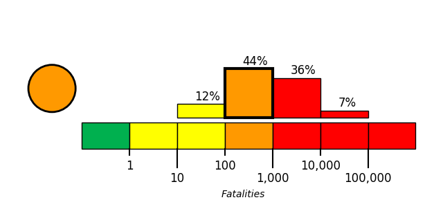
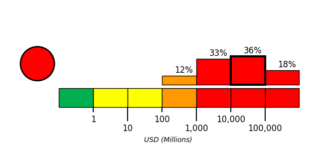

Introduction
On July 28, 2026, at approximately 16:27 local time (Asia/Tokyo; 2026-07-28 07:27 UTC), a magnitude 6.8 earthquake, with a reported depth of 10 km, occurred in Kumamoto Region, Japan. The USGS epicenter was at 32.6817° latitude and 130.722° longitude.
The North America plate, Pacific plate, Philippine Sea plate, and Eurasia plate all influence the tectonic setting of Japan, Taiwan, and the surrounding area. Some authors divide the edges of these plates into several microplates that together take up the overall relative motions between the larger tectonic blocks, including the Okhotsk microplate in northern Japan, the Okinawa microplate in southern Japan, the Yangzee microplate in the area of the East China Sea, and the Amur microplate in the area of the Sea of Japan.
The seafloor expression of the boundary between the Pacific and North America plates lies 300 km off the east coasts of Hokkaido and Honshu at the Kuril-Kamchatka and Japan trenches. The subduction of the Pacific plate beneath the North America plate, at rates of 83-90 mm/yr, generates abundant seismicity, predominantly as a result of interplate slip along the interface between the plates. The 1958 M 8.4 Etorofu, 1963 M 8.6 Kuril, 2003 M 8.3 Tokachi-Oki, and the 2011 M 9.0 Tohoku earthquakes all exemplify such megathrust seismicity. The 1933 M 8.4 Sanriku-Oki earthquake and the 1994 M 8.3 Shikotan earthquake are examples of intraplate seismicity, caused by deformation within the lithosphere of the subducting Pacific plate (Sanriku-Oki) and of the overriding North America plate (Shikotan), respectively.
At the southern terminus of the Japan Trench the intersection of the Pacific, North America, and Philippine Sea plates forms the Boso Triple Junction, the only example of a trench-trench-trench intersection in the world. South of the triple junction the Pacific plate subducts beneath the Philippine Sea plate at the Izu-Ogasawara trench, at rates of 45-56 mm/yr. This margin is noteworthy because of the steep dip of the subducting Pacific plate (70° or greater below depths of 50 km depth), and because of its heterogeneous seismicity; few earthquakes above M 7 occur at shallow depths, yet many occur below 400 km. The lack of large shallow megathrust earthquakes may be a result of weak coupling at the plate interface, or simply a reflection of an incomplete earthquake catalog with respect to the length of typical seismic cycles.
The northernmost section of the Philippine Sea plate shares a 350 km boundary with the North America plate that runs approximately east-west from the Boso Triple Junction towards the Izu Peninsula. This short boundary is dominated by the subduction of the Philippine Sea plate beneath Japan along the Sagami Trough, but also includes small sections of transform motion.
The subduction of the Philippine Sea plate under the Eurasia plate begins at the Suruga Trough, immediately southwest of the Izu peninsula. In the northern Tōkai, Tonankai and Nankai sections of this subduction zone, historical data indicate M 8+ earthquake recurrence intervals of 100-150 years. The Tonankai and Nankai sections last ruptured in M 8.1 earthquakes in 1944 and 1946, respectively, while the Tōkai section last broke in 1854. In the 1980's studies began to forecast the imminence of a large earthquake in the Tōkai region, and warned of its potential impact on the cities of Tokyo and Yokohama (the two largest cities in Japan); to date, the expected event has not occurred.
The boundary between the Philippine Sea and Eurasia plates continues south and southwestwards from the Suruga Trough, extending 2000 km along the Nankai and Ryukyu trenches before reaching the island of Taiwan. Along the Ryukyu Trench, the Philippine Sea plate exhibits trench normal subduction at rates increasing from 48 mm/yr in the northeast to 65 mm/yr in the southwest. Convergence and the associated back-arc deformation west of the oceanic trench creates the Ryukyu Islands and the Okinawa Trough. The largest historic event observed along this subduction zone was the M 8.1 Kikai Island earthquake in 1911.
In the vicinity of Taiwan the structure of the Philippine Sea: Eurasia plate boundary and the associated pattern of seismicity becomes more complex. 400 km east of Taiwan a clockwise rotation in the trend of the margin (from NE-SW to E-W), paired with an increase in subduction obliquity creates a section of the plate boundary that exhibits dextral transform and oblique thrusting motions. South of Taiwan the polarity of subduction flips; the Eurasia plate subducts beneath the Philippine Sea plate. Debate surrounds contrasting models of the plate boundary position between the zones of oppositely verging subduction, and the boundary's relation to patterns of seismicity. Many studies propose that crustal thickening causes the majority of regional seismicity, while others attribute seismicity to deformation associated with subduction. Another resolution proposes a tear in the Philippine Sea plate and a complex assortment of subduction, transform, and collisional motion. All the models concede that seismicity around the island of Taiwan is anomalously shallow, with few earthquakes deeper than 70km.
While there are no instances of an earthquake M>8 in the modern record, Taiwan and its surrounding region have experienced eight M>7.5 events between 1900 and 2014. The dominance of shallow M<8 earthquakes suggests fairly weak plate boundary coupling, with most earthquakes caused by internal plate deformation. The 1935 M 7.1 Hsinchu-Taichung earthquake and the 1999 M 7.6 Chi-Chi Earthquake both exemplify the shallow continental crust thrust faulting that dominates regional seismicity across the island. A major tectonic feature of the island is the Longitudinal Valley Fault, which ruptures frequently in small, shallow earthquakes. In 1951, the Longitudinal Valley Fault hosted twelve M≥6 events known as the Hualien-Taitung earthquake sequence.
Large earthquakes in the vicinity of Japan and Taiwan have been both destructive and deadly. The regions high population density makes shallow earthquakes especially dangerous. Since 1900 there have been 13 earthquakes (9 in Japan, 4 in Taiwan) that have each caused over 1000 fatalities, leading to a total of nearly 200,000 earthquake related deaths. In January 1995 an earthquake that ruptured a southern branch of the Japan Median Tectonic Line near the city of Kobe (population 1.5 million) killed over 5000 people. The 1923 Kanto earthquake shook both Yokohama (population 500,000, at that time) and Tokyo (population 2.1 million), killing 142,000 people. The earthquake also started fires that burned down 90% of the buildings in Yokohama and 40% of the buildings in Tokyo. Most recently, the M9.0 Tohoku earthquake, which ruptured a 400 km stretch of the subduction zone plate boundary east of Honshu, and the tsunami it generated caused over 20,000 fatalities.

Building Damage
Widespread building damage was reported across Kumamoto Prefecture, with at least 12 buildings collapsed and people trapped in four cases [12]. In Kashima Town, the second floor of the Aeon Mall shopping centre collapsed, trapping an unknown number of people [9][11]; reports variously attributed the collapse to an explosion following the earthquake or to aftershocks [3][7]. At the Nippon Paper Industries Co.’s Yatsushiro factory, a chimney collapsed, the building was damaged, and 11 people were trapped beneath debris [9]. Parts of the stone walls of Kumamoto Castle collapsed, including walls previously damaged in 2016 and undergoing restoration [1][4]. The worship hall of Yatsushiro Shrine collapsed in Yatsushiro City [2], a Torii gate collapsed in Katsushiro City [2], and a shop’s exterior wall collapsed in Kumamoto City [4]. Traditional wooden homes and older structures collapsed, while newer post-1981 buildings remained relatively unscathed [8]. Additional reported damage included flattened homes, building fires, bridge collapses, destroyed steel towers, and toppled interior shelving [5][6][10].
Infrastructure Impact
Roads and bridges: Damage to roads and bridges was reported across affected areas of Kyushu following the magnitude 7.1 earthquake [13][18]. Roads in Kumamoto City were described as severely damaged, while another account reported that a highway bridge buckled after the earthquake struck Kumamoto [19][27]. A collapsed bridge was also documented in southern Kumamoto Prefecture [16][17]. These specific damage reports contrast with an assessment by Japan’s Fire and Disaster Management Agency that there were no reports of damage to major public facilities and infrastructure; however, the agency stated that authorities were still evaluating the overall extent of earthquake damage [20]. Electric power: Power outages occurred in some affected areas, with thousands of households reported to be without electricity [13][19]. Another report similarly stated that power had been knocked out to thousands of homes in Kumamoto Prefecture [25]. Railways: Shinkansen bullet trains and local trains in Kyushu were suspended while safety checks were conducted [4][9]. Railway operations were among the transportation services affected across Kyushu as authorities performed post-earthquake inspections [26]. Airports and aviation: The runway at Aso Kumamoto Airport was closed, and an airport notice stated that there was “no prospect of resuming operations” [4][21][22]. Air travel operations at Aso Kumamoto Airport were described as having come to a sudden halt [26]. FlightRadar24 reported hundreds of delayed flights to and from Japan, including services involving Kumamoto airport and Fukuoka airport on Kyushu [23]. In contrast, Tokyo Haneda Airport remained open and continued operating despite the earthquake [24]. Nuclear power facilities: Safety checks were initiated at nuclear power plants after the earthquake [14]. Kyushu Electric Power Company reported no abnormalities at the Genkai nuclear power plant in Saga Prefecture or the Sendai nuclear power plant in Kagoshima Prefecture [14][29]. Japan’s Nuclear Regulation Authority likewise reported no abnormalities at nuclear facilities in the affected area, including the Sendai Nuclear Power Plant [15][25]. The Sendai facility, approximately 100 kilometers from the earthquake’s epicenter, was reported undamaged based on information provided by the authority to the International Atomic Energy Agency [27][28].
Resilience and Recovery
Casualty reporting increased as assessments progressed after the magnitude 7.1 earthquake struck Kumamoto Prefecture on Tuesday, July 28, 2026 [10][26]. By Friday, the Kumamoto prefectural government reported 36 deaths and six people in serious condition, superseding earlier totals of 13–34 fatalities [33][34][35][42]. An earlier prefectural report recorded at least 62 injured people, including six seriously injured [36]. Hundreds of injured residents were transported to medical facilities across Kumamoto, although some hospitals ceased operating because of power outages and other problems [25]. Two hospitals were each reported to be treating more than 50 patients, some in serious condition [38]. At the Aeon shopping mall in Kashima, an earthquake-related explosion killed three people; as of Wednesday, one person was unresponsive and three remained unaccounted for [30]. The Fire and Disaster Management Agency reported that more than 260,000 people were advised to evacuate, primarily in Kumamoto and neighboring Nagasaki [9]. Other contemporaneous reports placed the evacuation instruction at approximately 300,000 people, indicating a discrepancy in early figures [37][39]. By Wednesday, about 8,700 people were staying in evacuation centers [30]; more than 9,000 remained in shelters on Friday, three days after the earthquake [42]. The government issued emergency earthquake warnings for Kumamoto, Nagasaki, Kagoshima, Fukuoka, Saga, Oita, and Miyazaki prefectures across Kyushu [40]. Tsunami and aftershock warnings were also triggered, although authorities lifted the tsunami alert on Tuesday [40][43]. Continued aftershocks complicated conditions for evacuated communities and rescue personnel [37]. Search-and-rescue operations continued across Kumamoto Prefecture on Wednesday, with responders searching for survivors and people trapped in damaged structures [33][39]. Hundreds of soldiers were deployed to support rescue operations, while Prime Minister Sanae Takaichi established an emergency disaster-response task force [32][37]. Rescue activity included the partially collapsed Aeon shopping mall, where multiple people were trapped following an explosion, and a Nippon Paper Industries factory, where several people were unaccounted for after a chimney collapse [41][25]. The earthquake initially cut electricity to approximately 48,300 households in Kumamoto [23]; later reporting indicated that the number without power was declining as service was restored [27]. Nevertheless, many households still lacked water or electricity on Friday [42]. JR Kyushu suspended rail services, including bullet trains, while bullet-train operations remained mostly suspended on Wednesday [30][31].
PAGER Estimates
USGS PAGER tool estimated the fatalities to be in the orange alert level, which is most likely between 100 and 1,000 with a probability of 44%.
USGS PAGER tool estimated the economic loss to be in the red alert level, which is most likely between 10,000 and 100,000 million dollars with a probability of 36%.


References
- [1] mk.co.kr - https://www.mk.co.kr/en/world/12110305
- [2] ph.headtopics.com - https://ph.headtopics.com/news/japan-earthquake-aftermath-17-dead-shopping-mall-86090739
- [3] sundayguardianlive.com - https://sundayguardianlive.com/world/kumamoto-japan-earthquake-news-today-shopping-mall-collapse-traps-multiple-people-after-71-magnitude-quake-300000-told-to-evacuate-as-tsunami-alert-lifted-248090
- [4] ph.headtopics.com - https://ph.headtopics.com/news/magnitude-7-1-earthquake-shakes-part-of-southern-japan-but-86023270
- [5] ground.news - https://ground.news/article/death-toll-from-japan-earthquake-rises-to-34_361319
- [6] asiae.co.kr - https://www.asiae.co.kr/en/article/2026072913434017753
- [7] vietnam.vn - https://www.vietnam.vn/en/du-chan-dong-dat-o-nhat-ban-keo-dai-bao-lau-co-anh-huong-den-viet-nam
- [8] ie.headtopics.com - https://ie.headtopics.com/news/powerful-earthquake-strikes-japan-s-kyushu-death-toll-86073181
- [9] guelph.ctvnews.ca - https://guelph.ctvnews.ca/climate-and-environment/article/a-magnitude-71-earthquake-shakes-part-of-southern-japan
- [10] en.tempo.co - https://en.tempo.co/read/2115970/japan-earthquake-death-toll-rises-to-13
- [11] indianexpress.com - https://indianexpress.com/article/world/japan-earthquake-kumamoto-aeon-mall-collapse-explosion-several-killed-trapped-10807480
- [12] us.headtopics.com - https://us.headtopics.com/news/7-1-magnitude-earthquake-hits-japan-causing-widespread-86021440
- [13] me.mashable.com - https://me.mashable.com/culture/74337/japan-earthquake-2026-devastating-videos-show-destruction-as-considerable-death-toll-feared-in-kumam
- [14] vietnam.vn - https://www.vietnam.vn/en/canh-bao-song-than-sau-tran-dong-dat-7-1-do-tai-nhat-ban
- [15] sundayguardianlive.com - https://sundayguardianlive.com/world/japan-earthquake-today-live-paper-factory-workers-missing-shopping-mall-collapse-traps-people-as-powerful-quake-damages-kumamoto-castle-248170
- [16] us.headtopics.com - https://us.headtopics.com/news/japan-earthquake-live-updates-up-to-30-mall-employees-86030119
- [17] sa.headtopics.com - https://sa.headtopics.com/news/japan-earthquake-live-updates-up-to-30-mall-employees-86030119
- [18] bbc.com - https://www.bbc.com/newsround/articles/c70g69g8xx2o
- [19] vietnam.vn - https://www.vietnam.vn/en/cap-nhat-dong-dat-nhat-ban-thiet-hai-dien-rong-nhieu-nguoi-thuong-vong
- [20] thehindubusinessline.com - https://www.thehindubusinessline.com/news/world/japan-earthquake-magnitude-71-quake-hits-kumamoto-tsunami-warning-issued/article71276025.ece
- [21] sa.headtopics.com - https://sa.headtopics.com/news/magnitude-7-1-earthquake-shakes-part-of-southern-japan-but-86023270
- [22] us.headtopics.com - https://us.headtopics.com/news/magnitude-7-1-earthquake-shakes-part-of-southern-japan-but-86023270
- [23] inkl.com - https://www.inkl.com/news/japan-earthquake-latest-at-least-13-dead-in-kumamoto-amid-race-to-reach-people-trapped-in-shopping-centre
- [24] sundayguardianlive.com - https://sundayguardianlive.com/world/japan-earthquake-news-is-haneda-airport-open-or-closed-today-the-kumamoto-earthquake-triggers-flight-disruptions-check-latest-flight-status-delays-cancellations-travel-advisory-more-248178
- [25] inkl.com - https://www.inkl.com/news/multiple-people-trapped-inside-shopping-centre-in-japan-after-earthquake-live-updates
- [26] sundayguardianlive.com - https://sundayguardianlive.com/world/japan-earthquake-news-is-aso-kumamoto-airport-kmj-open-or-closed-today-powerful-71-magnitude-kumamoto-quake-shuts-runway-check-latest-flight-status-delays-travel-advisory-more-248244
- [27] us.headtopics.com - https://us.headtopics.com/news/live-updates-japan-earthquake-many-people-trapped-in-86025030
- [28] thenews.com.pk - https://www.thenews.com.pk/latest/1410561-japan-at-least-13-killed-in-earthquake-as-rescuers-race-to-find-others-trapped-in-rubble
- [29] news.cgtn.com - https://news.cgtn.com/news/2026-07-28/news-1P98gnzGAQo/p.html
- [30] english.kyodonews.net - https://english.kyodonews.net/articles/photo/80948
- [31] bangkokpost.com - https://www.bangkokpost.com/world/3292955/71-earthquake-strikes-japans-kyushu-region
- [32] m.economictimes.com - https://m.economictimes.com/news/international/world-news/japan-hit-by-massive-7-1-earthquake-pm-takaichi-launches-emergency-task-force-rescue-ops-underway/amp_videoshow/132694074.cms
- [33] abcnews.com - https://abcnews.com/International/13-dead-japanese-earthquake-search-rescue-efforts-continue/story?id=135181413
- [34] tass.com - https://tass.com/emergencies/2167195
- [35] jpost.com - https://www.jpost.com/international/article-904198
- [36] thehindu.com - https://www.thehindu.com/news/international/japan-earthquake-today-live-updates-seismic-activity-tsunami-warnings-on-july-28-2026-several-dead-injured/article71276753.ece
- [37] channelnewsasia.com - https://www.channelnewsasia.com/east-asia/japan-kyushu-earthquake-71-tsunami-6282661
- [38] theedgemalaysia.com - https://theedgemalaysia.com/node/812281
- [39] thenationalnews.com:443 - https://www.thenationalnews.com:443/news/asia/2026/07/28/tsunami-warning-after-powerful-earthquake-hits-southern-japan
- [40] sbs.com.au - https://www.sbs.com.au/news/article/tsunami-warnings-issued-for-southern-japan-after-major-earthquake/xo7hmymhb
- [41] abc.net.au - https://www.abc.net.au/news/2026-07-28/japan-earthquake-live-coverage/106969150
- [42] english.kyodonews.net - https://english.kyodonews.net/articles/photo/81225
- [43] telesurenglish.net - https://www.telesurenglish.net/japan-lifts-tsunami-alert-7-1-quake